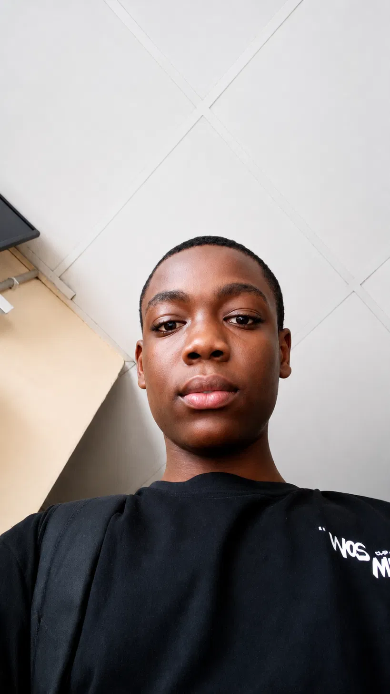

A Bit About Me
My Name is Nwachukwu Daniel, am easy to approach and associate with, known for a welcoming and personable nature, i value living in the present, embracing whatever each day brings with a calm and steady outlook. Outside of my core interest, i enjoy writing and watching movies, i have a strong curiosity for understanding how things work - particularly in the cyber-space, where complexity often gives way to a genuine reward once really understood.
Educational Background
I am currently a 1st year student pursuing a Bachelor of Science in Cyber Security at MIVA Open University. Before that i completed my secondary school education at 'Formerly called FSTC Orozo where i had a rough time, but still succeeded in laying the foundation for the person i am today.
A Little More From Me
Regarding my time at Miva:
Career Aspirations
Is to build strong expertise in Ethical Hacking, Network and cloud security,earn industry recognised certifications, and eventually progress into advanced roles Like, Red Team Operator. Earning a place amongst the Big names in the CyberSec Sector.
Goals
- To earn my Uncle's Recognition
- To become a sort-after Analyst/Pentester (Ethical Hacking)
- Money, Money, Money 😊
Technical Skills
- HTML 'Basic
- CSS
- 'Vanilla JavaScript
- Python
- Ubuntu Linux
- Nmap 'Basic
Hobbies & Interests
- 💻 Coding 'Interest- My Journey to coding began with my Uncle, he just had a way with computers, i was intrigued by what he could do, Under him i realised that technology was more than just a tool. Am not yet there but with time, driven by desire, i will surpass all.
- 📚 Writing- I'm a great writer 'currently working on something, A second base if CyberSec doesn't work out for me.
- ⚽ Sports- Not my thing.
- 📚 Reading- I love reading.
- 🎮 Gaming- I'm an impressive gamer 'COD/FF.
- 🎵 Listening to music- Mehh!!.
My Weekly Timetable
| Day | Course | Time | Venue |
|---|---|---|---|
| Monday | Elementary Maths II | 10:00pm | Google Meet |
| Monday | Practice Lab | 09:00pm | Online |
| Tuesday | General Physics II | 02:00pm | |
| Thursday | Intro Problem Solving / Intro Web Technology | 10:00pm | Google Meet |
| Saturday | General Physics II | 04:00pm | Cafe |